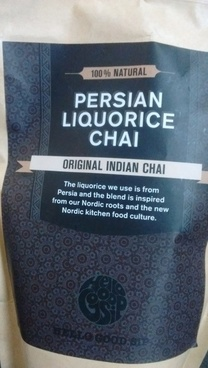

چای شیرینبیان

میخواستم از سفارت خرتوخر آمریکا بنویسم و از خودمان که چقدر آمریکایی هستیم. خسته و دست از پا درازتر که برگشتم دانشگاه همان دم در همصحبت شدم با همکار تپل و سیگاریمان. از مادرش گفت که پارکینسون دارد و ویلچرنشین است. از شوهرش که سگ درشتهیکلشان را با دوچرخه میبرد گردش. از پدرش که با هشتاد و اندی سال و قلب عملی، تنهایی مراقب مادرش است. از عشق و محبتی که در رفتار پدرش میبیند و غبطه میخورد. از پدرش گفت که قهرمانش است. در جوانی مدرسهای ساخته برای جوانان بزهکار و کار یادشان داده. گفت کمک کردن و همدلی را از پدرش آموخته. گفت اگر کمک بخواهی همیشه یکی هست. گفتم آدمها خودخواهند. همیشه دست یاری هست، چون آدمهایی مثل پدر تو توی دنیا هستند. به قول مادرم خدا زیادشان کند.
عکس بالا را توی آشپزخانه کوچک کنار دفتر کارم دیدم. چایی با طعم شیرین بیان! مناسب سلیقه مردم اسکاندیناوی. توضیح داده که شیرینبیان یا به قول شیرازیها ریشمک را از پرشیا وارد میکنند. خیلی هم خوب. نوش جانشان.